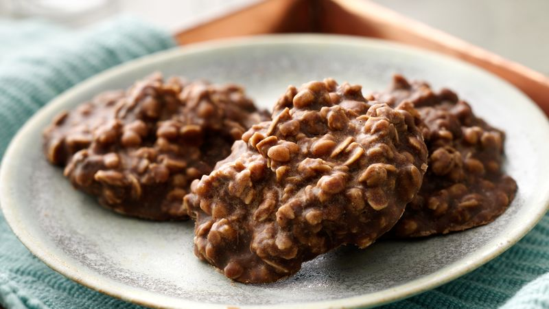

What could be better than an indulgent dessert made from ingredients you have sitting in your pantry and that never needs to go into the oven? These cookies take just minutes of work; most of the time is spent waiting for them to harden into the rich, nutty, chocolaty delights that they are.
Yield:
About 36 cookies
Prep Time:
5 Minutes
Cook Time:
3 Minutes
Inactive Time:
30 Minutes
Ingredients:

Fig1. - A stack of the finished no-bake cookies on a plate.
2 cups granulated sugar
8 tablespoons (1 stick) margarine or butter
½ cup low-fat milk
⅓ cup baking cocoa
3 cups Quaker® Oats (quick or old fashioned, uncooked)
Directions:
In large saucepan, combine sugar, margarine, milk and cocoa.
Bring to boil over medium heat, stirring frequently.